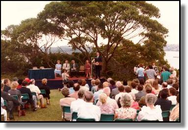

North Head Sanctuary Foundation is working with Government agencies towards the establishment of
Car-rang-gel Sanctuary on North Head at the gateway of Sydney Harbour - a
flagship for Australia's environmental resolve and a celebration of our natural and cultural heritage.
Car-rang-gel Sanctuary on North Head, Sydney
Built Heritage of North Head
The built heritage of North Head accurately reflects the use of the headland since 1828, beginning with quarantine of passengers and crew from ships arriving with contagious diseases. As the needs for quarantine lessened in the 20th Century other uses of North Head were introduced. The remains of defence structures and the School of Artillery buildings remind us of the impact of World War II. St Patricks estate, St Paul's School and the hospital reflect uses related to Christianity, education and health whilst the Sewerage Treatment Plant demonstrates a 20th Century approach to drainage and sanitation.
North Head contains several individual sites of heritage significance:
The National Park containing stone walls, an obelisk, burial grounds, and former military structures
The wharf where passengers arrived for quarantine.
The vulnerability of the Colony's early settlers to ship-borne diseases and epidemics was highlighted by the Quarantine Act of 1832, which led to the establishment that same year of the Quarantine Station at Spring Cove, a settlement which by 1837 covered the whole headland. The waters surrounding Quarantine Beach and Store Beach are where European vessels were first quarantined.
A signal mast at Cannae Point was used from the 1830s to signal to shipping quarantine conditions at the Quarantine Station. As the first place designated as a place of quarantine for people entering Australia, the North Head Quarantine Station (and the Seamen's Isolation Hospital) is the oldest and most intact example of quarantine facilities in Australia.
It was always the pre-eminent place of quarantine among the colonies, both because of its early beginnings, and because it led in many of the advances in quarantine practice. The Station's function remained unchanged from 1834 to 1984, and all the buildings and developments illustrate the changing social and scientific demands of quarantine during that period.

The 1984 hand-over ceremony.
The history of the Quarantine Station interconnects with a number of key themes in Australia's history. The demands of quarantine, and the spotlight this cast on health standards, forced improvements in conditions experienced by immigrants, through the 19th century in particular. The procedures established for the quarantine of inbound shipping set the foundation for responding to the various local smallpox, plague and influenza epidemics up until the 1920s. The Quarantine Station dramatically demonstrates, in its developments to separate and deal differently with different classes and races of people, the changes in the social attitudes of the Colony.
The final transfer of the Quarantine Station to the State in 1984 reflected the now common pattern whereby land formerly reserved for special purposes, and protected from the development pressures of urban growth, became valued for the cultural and natural values they possess, and were re-gazetted for conservation purposes when no longer needed for the special purpose for which they were established.
Now operated as a private hotel, the Quarantine Station site has strong and special emotional associations for the diversity of people quarantined there, many of their relatives, and those who staffed the facility during its extensive period of operation.
School of Artillery
School of Artillery
The School of Artillery precinct on North Head has a vital link with the North Head Quarantine Station. From 1837 to 1907 it was part of the Quarantine Station Reserve originally declared by Governor Bourke, and it incorporates the Quarantine Station's Third Cemetery, which demonstrates the final active stage of the use of North Head Quarantine Station between 1881 and 1925.
The Quarantine Station's Third Cemetery contains the graves of victims of the post-World War I influenza epidemic and many others. It is one of very few remaining sites that demonstrate the "winding down" period in Australia's quarantine history. NHSF volunteers work to conserve the Third Cemetery's native vegetation.
The School of Artillery precinct forms a central part of the North Head peninsula. As the headquarters of the First Heavy Brigade, it performed a critical role in the defence of Sydney during the only time when the nation has faced the threat of invasion. The extensive reinforced concrete tunnel system on this precinct was "state of the art" for this period. It was arguably the single most important in the national chain of major coastal artillery facilities installed in the 1930s. As the School of Artillery, the site performed a key role in the development of Australia's military capability from 1947 to 1997.
National Artillery History
The School of Artillery precinct illustrates in its fabric the course of its development as the former headquarters of the First Heavy Brigade. It also contains disused structures from that period (such as the former plotting room and underground tunnel system) that have the potential to demonstrate the military technology in use at the climactic moment in the development of land-based artillery defences against naval attack.
This heritage is maintained and presented to the public at North Fort, with the Royal Australian Artillery History Company volunteers playing a key role in the Cutler Research Centre and the Australian Memorial Walk.
Seaman's Hospital
These buildings were part of the Quarantine Station. Quarantine Station staff helped care for seamen who were suffering from venereal diseases. The buildings are currently used by the Australian Institute of Police Management.
Stone walls and Parkhill Arch
Parkhill Arch
North Head is characterised by about seven kilometres of sandstone walls. The first was built in about 1901 and was designed to separate the Quarantine Station from St Patricks Seminary. This wall incorporated a stone “Quarantine Arch” on Darley Rd. A second wall was built in the early 1930s as part of a Manly Council Depression-relief project. At this time, the arch was moved and incorporated into the new wall with a new name “Parkhill Arch”. This arch is part of the NHSF logo. In 1934-1936, as part of the establishment of North Fort for the Army, two further walls were built. The walls are Heritage Listed.
St Patrick's Seminary
St Patrick's College with the chapel to the right.
A large tract of the former Quarantine Station was given to the Catholic Church in the late 1870s. The Roman Catholic Archbishop of Sydney, Patrick Moran, organised the construction of a Seminary. During its construction Moran was summoned to the Vatican to be made a Cardinal. The seminary incorporated a chapel and a “Cardinals Palace”. The seminary was home to many trainee priests including Tom Keneally and Tony Abbott. In later years, the seminary was closed and much of the land turned into a housing estate. The main building now houses the International College of Management. The chapel is still used for weddings, the most famous perhaps, being that of Nicole Kidman.